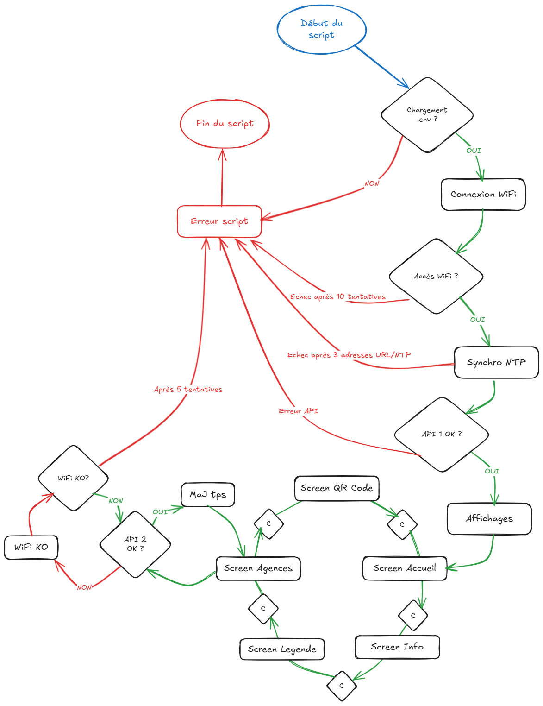

Présentation projet OPT
M2 MIAGE - Année 2024

Objectif
Un projet de dataviz
drivée par les données de temps d'attente de l'OPT-NC
Comment ?
En utilisant les capacités d'une matrice LED
Matériel mis à disposition
Pimoroni Cosmic-Unicorn


- Power/prog by USB micro-B
- 1024 RGB LEDs in a 32x32 grid
- 9 buttons + Reset
Raspberry Pi PicoW intégré

- Dual Arm Cortex M0+ 133MHz 264kB
- 2MB of QSPI flash supporting XiP
- 2.4GHz wireless
- C/C++ and MicroPython libraries
Affichages disponibles
Screen "Accueil"

D: Reboot
Volume +/-
Lux +/-
Screen "Info"

Accès WiFi OK/KO
Accès clé API OK/KO
Accès fichier agences
D: Reboot
Volume +/-
Lux +/-
Screen "Légende"

Icone son activé
Icone son désactivé
Icone état WIFI
Icone arrêt boucle
D: Reboot
Volume +/-
Lux +/-
Screen "Agences"
Sigle OPT
Heure NTP
Smiley temps attente
Son
Tps
Wifi
Loop
Défilement nom agence
A: Son
B: Boucle
C: Screen
D: Reboot
Volume +/-
Lux +/-
Screen "QR Code"

D: Reboot
Volume +/-
Lux +/-
Principe du script
boot.py
Permet au démarrage de la matrice de basculer sur le fichier python de ce projet
main.py
Permet d'executer le script python de ce projet
Principe du script
